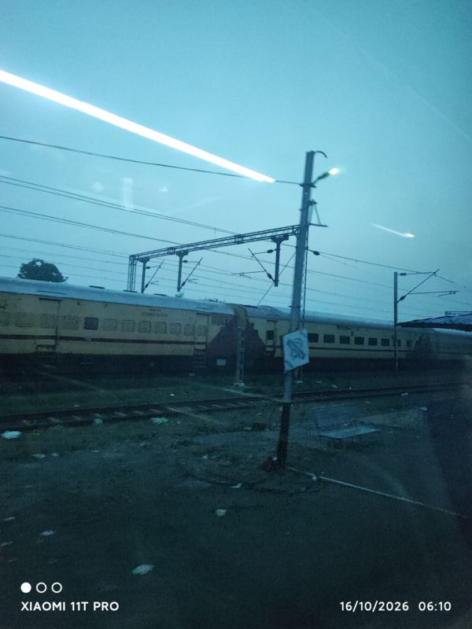

Some ideas stay with you until you
finally do something about them.
Where wildlife photography curiosity met computer science, and a dormant ambition found its catalyst.
Some projects begin with a problem statement assigned on a briefing sheet. Others begin with a personal interest that stubbornly refuses to remain just a weekend pastime.
For me, WILDHACK 2K26 was where two of my deepest pursuits — computer science and wildlife — finally converged. I have always been fascinated by artificial intelligence, computational geometry, and the quiet power that emerges when software tackles real-world friction. At the same time, I am an avid wildlife photography enthusiast.
When you spend dawn hours sitting in a safari jeep in the teak forests of Central India, tracking movement through a telephoto lens, you begin to see wildlife differently. Every Bengal tiger is not just a representative of Panthera tigris; it is a living individual with a distinct identity, an intricate behavioral history, and a unique biometric fingerprint etched across its flanks in high-contrast melanistic stripes.
I had been thinking about wildlife re-identification for quite some time. The concept of turning raw camera-trap photographs into verifiable individual identities was something I talked about, researched in academic papers, and repeatedly postponed because of semester workloads and data scarcity.
Then, scrolling through LinkedIn, the announcement for WILDHACK 2K26 appeared: an offline hackathon organized in Ballarpur, Chandrapur, in direct collaboration with the Tadoba-Andhari Tiger Reserve.
A single thought crossed my mind, clear and unavoidable: If not me, then who? It was time to stop postponing the idea and start building.

“I had been thinking about wildlife re-identification for quite some time. WILDHACK was an opportunity to stop postponing the idea and start building.”
— Hanshal Bobate, Team HackOPs